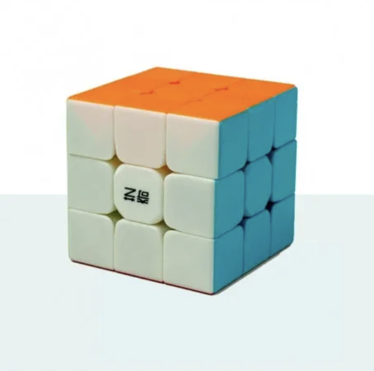
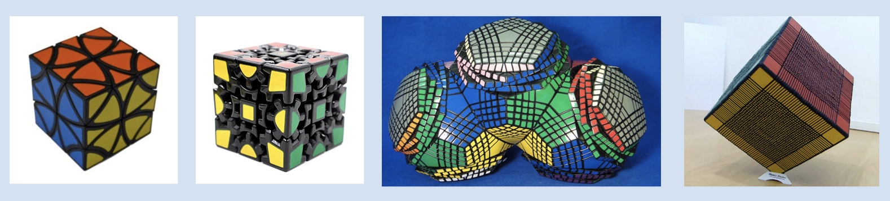

Cubo Rubik
Colegio Francés Hidalgo, Angel y Daniel

Cubo Rubik 3x3
Un cubo de Rubik clásico posee seis colores uniformes (tradicionalmente blanco, rojo, azul, naranja, verde y amarillo). Un mecanismo de ejes permite a cada cara girar independientemente, mezclando así los colores. Para resolver el rompecabezas, cada cara debe volver a quedar en un solo color.
Historia

El creador
El cubo de Rubik toma su nombre de su creador, el escultor, diseñador y profesor de arquitectura húngaro Ernő Rubik, nacido el 13 de julio de 1944. En 1974, Rubik patentó su creación en Hungría y en 1977 se comenzó a comercializar en el país.
Pasos
- Resolución de la cruz superior (blanca).
- Completar la cara superior.
- Completar la segunda capa.
- Conseguir una cruz en la cara amarilla.
- Extender la cruz a la última capa.
- Colocar los últimos vértices (sin orientar).
Tipos de cubos
Estos cubos son muy difíciles de armar y son muy extraños.

Otros cubos rubik
Precio y donde conseguirlos
Los cubos rubik se encuentran en amazon mercado libre, liverpool, walmart y cuestan alrededor de 100 a 300 pesos.